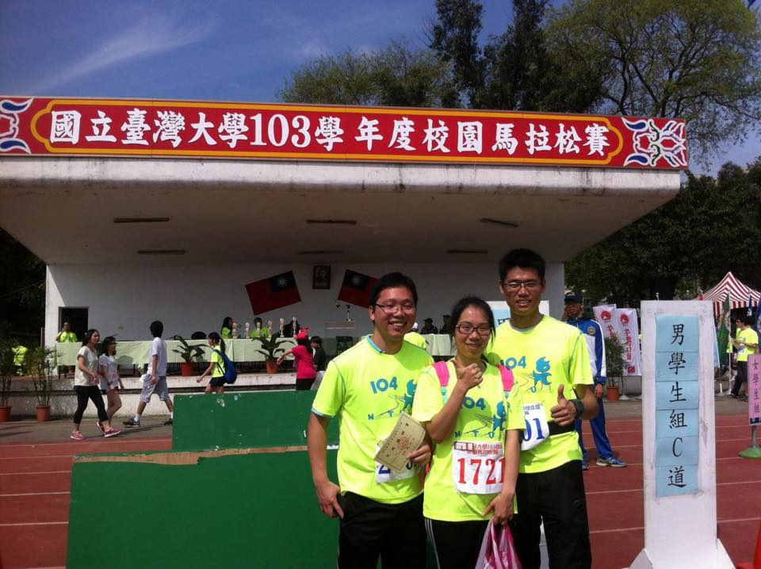
您好! 这里是 余建远的主页.
🔎积极寻求无线通信和网络相关实习或工作岗位中....
硕士就读@台湾大学电信所
台北, 台湾.
关于
- 出生：1991
- 籍贯:江苏 泰州
- 2014/09 - 至今 电信工程研究所
台湾大学, 台湾.
电机硕士
题目: 无线通信和网络
GPA: 3.58/4.0 成绩单
导师: 谢宏昀
主要科目:
- 无线通信网络设计
- 无线接入网络
- 最佳化概论
- 数字通信集成电路设计
- 数据科学
- 机器学习及深度结构化 - 2009/09 - 2013/06 电子与信息学院
北京理工大学.
本科，信息工程
GPA: 3.38/4.0 成绩单
毕业设计题目: 基于MFC的全球定位系统信号处理模拟软件设计
Key courses:
- 数字信号处理
- 随机信号处理
- 数字通信原理
- 程序设计(C\&C++)
- 电路分析
- 模拟电路
- 数字电路 - 我感兴趣领域包括:
- 物联网 / 智能家居
- 无线传感器网络/ 车载通信网络 / 人体局域无线网
- 无线网MAC层协议设计与分析
- 无线网络安全
- Soc/ FPGA 开发
- 5G 通信/ 蜂窝网
- 数据挖掘. - 更多我个人信息, 敬请参考我的简历 [中文简历]/ [CV English].
研究
IEEE802.15.4e TSCH 无线网络下的高效传输
- 谢宏昀教授指导, TONIC Lab @ NTU, 2014.9-至今
- 为达到更快的信息收集速度,探索图论中匹配和上色问题的不同标准.[pdf link]
- 设计平衡树路由法和多端口,达到更快的数据收集速度和更平衡的资源消耗,部分成果得到发表.
- 有损传输下,对重传资料进行资源分配.[pdf link]
- Publication: IEEE ICCS 2016 as full paper(In press)
[paper],
[author list]
ICEECS post, [paper], [author list].
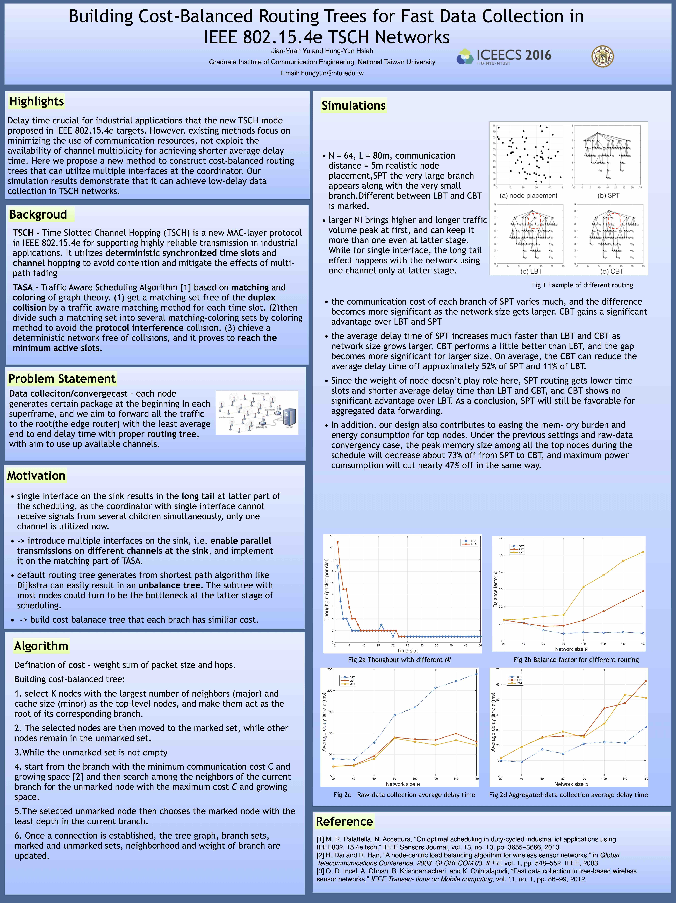
基于MFC的全球定位系统信号处理模拟软件设计
- 刘峰教授指导，雷科实验室, 北理工，2013.3 - 2013.6}
- 毕业设计,在MFC框架下实现GPS算法,包括调制,纠错码,同步纠正,锁相环以及绘图插件.相较于之前matlab版本,该软件对电脑配置更低,运算更快.

安卓系统上的数据恢复
- 李祥学教授指导，网络安全实验室, 华东师，2014.4 - 2014.6
- 探索侦查应用情形下的数据恢复,包括数据被删除,系统摧毁和奔溃.前期调研包括数据加密/解密理论,数据存储架构等.
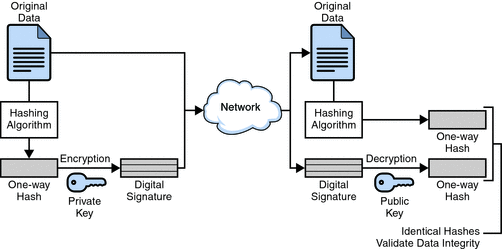
项目
智能家居灯 (2014)
多个单片机设备协同工作，根据用户在不同位置和周围光照，智能选择打开的灯，达到有效率的照明效果。项目用C语言对单片机汇编，实现功能通过验收.
- Teamwork with Yi Zhang and Florent Maye.
- Result: [Yoututbe Link]
对车载网络DSRC协议在NS3平台上的模拟验证 (2015)
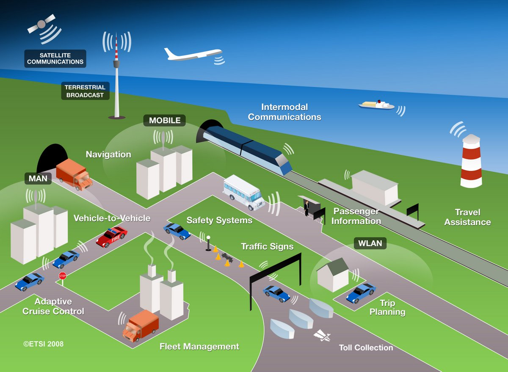
对车载网络DSRC协议在不同QoS要求和交通流量的情况下的NS3模拟与分析.
- Teamwork with Chun Hsiung Wang and Yun-Pu Wu.
- Result: [report]
有预先编码的LTE多用户MIMO研究 (2016)
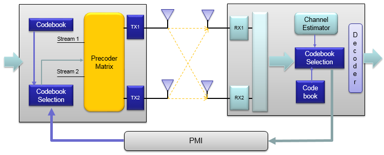
提出选择特征向量等预先编码的方案,从LTE编码本中选择PMI来降低beam之间的干扰,并寻求不同用户之间信道相关的影响.
- Teamwork with Ya-Han Lee and Jun Wang.
- Result: [report]
数据挖掘-根据配料猜菜式 (2015)
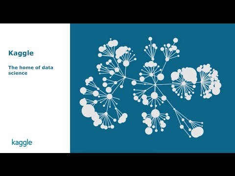
由配料猜测菜的种类，尝试了similarity，PCA, random forest , xgboost library, ML等方法，最后结合LDA和ID-IDF得到满意结果.
- 所用语言R与Python.项目成绩最终达到81% 正确率，排进kaggle top 5%.
- Teamwork with Liyuan Hong and ZhengKang Lau.
- [slide]
机器学习及其深层次结构化-语音识别 (2016)
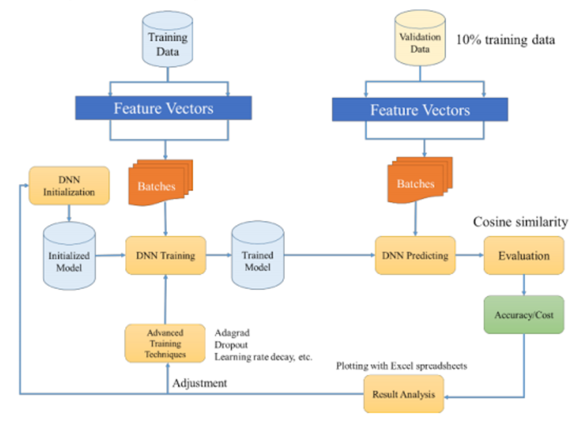
用深度机器学习的方法来实现语音识别,基于tensorflow.
- DNN, 利用技巧 dropout, ReLU, epoch, active function selection.
- RNN, 利用技巧 tricks bi-direcntional, RMSPro, smoothing, trimming.
- Structure Learning, 实现 HMM.
- Teamwork with Xing-Zuo Tsai and Ming-An Lee.
- Result: [report]
基于单片机的触屏系统 (2012)
一个以触屏为交互端的单片机系统,包含LED灯,光传感器等原件.用于实时统计楼里面的人数,被选为展示作品.
- Individual Work.
发表
Conference Papers
- Jianyuan Yu, Hung-Yun Hsieh, "Application of Multiple Interfaces and Balanced Tree Routing of Low-delayed Convergecast in IEEE802.15.4e TSCH M2M Networks," in IEEE ICCS, Shenzhen, China, December 2016. [paper], [author list]
- Jianyuan Yu and Hung-Yun Hsieh, "Building Cost-Balanced Routing Trees for Fast Data Collection in IEEE802.15.4e TSCH Networks," in ICEECS, Taipei, Taiwan, Oct 2016. [paper], [poster], [author list].
Thesis(Ongoing)
- Jianyuan Yu, "Advanced Scheduling of IEEE802.15.4e TSCH Wireless Networks," in Department of Communication Engineering, National Taiwan University, Taiwan, April 2017.
活动
-
北理工红十字会
- 宣传部长，连续两年办理四期负责献血和急救培训(2009,2010).
- 吸引200学生参与，校园新闻有报道.
实习与工作
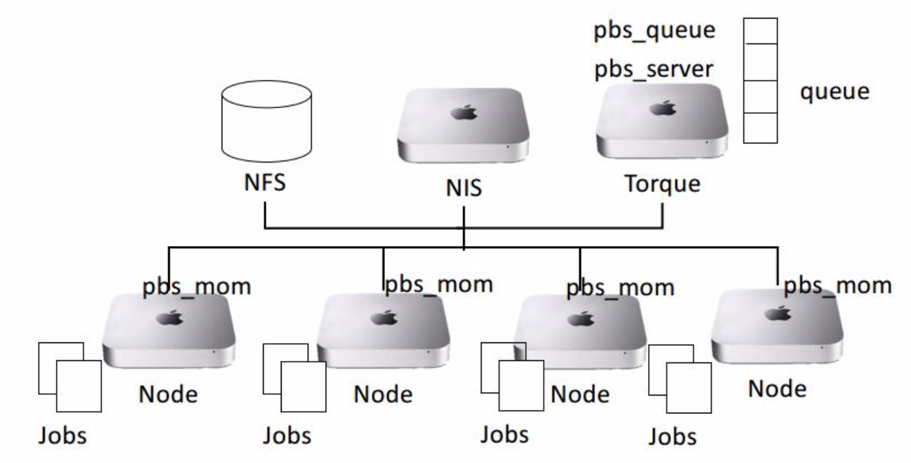
-
TONIC实验室(Mobile Networks and Wireless Communications (TONIC) Research Group) @ NTU
- 研究IEEE802.15.4e无线网络的高效传输研究.
- 实验室网管,负责50多台电脑10多个用户组成的pbs系统CentOS的维护.
-
慧易升教辅, 北京
- 编写信号与系统(A.V.Oppenheim),数字信号处理(J.G.Proakis)等英文教材课后进阶习题和考研题(清华,中科院电子所)答案.
助教, 2013.9 - 2014.1
-
协力超越公司, 北京
- 学习WCDMA PTN 调试的基本操作, 并解决实际案例中的相关技术问题.
实习生，2012.9
获奖
- 2013.7 北京大学生电子设计赛2012 - 宽带AGC系统. 8小时现场比赛,要求快速学会和使用现场指定ADC,DAC,功放等电子元件,设计反馈电子电路等.
- 2011.1 数学建模美国邀请赛MCM2011
- 2015.6 2B Hackthon NTU
- 2009,2010 实验班奖学金
技能
- Programming: C/C++, Matlab, Shell, Python, Java, Latex, HTML/CSS, Verilog, R, SQL
- Toolkit Library：NS3, ITPP++, OPNET, OpenWSN, Mininet,vim, gdb. Android Studio, Xcode, Tensorflow, Caffee, Keil
- 语言：汉语 (母语), 英语 (专业).
- TOEFL, 98, Reading (27 / 30), Listening (27 / 30), Speaking(20 / 30), Writing(24 / 30)
- GRE： 318, Verbal (151 / 170), Quantitative (167 / 170), Analytical Writing (3.0 / 6.0)
- 英语六级CET6： 521
- 英语四级CET4： 581
- C1驾照
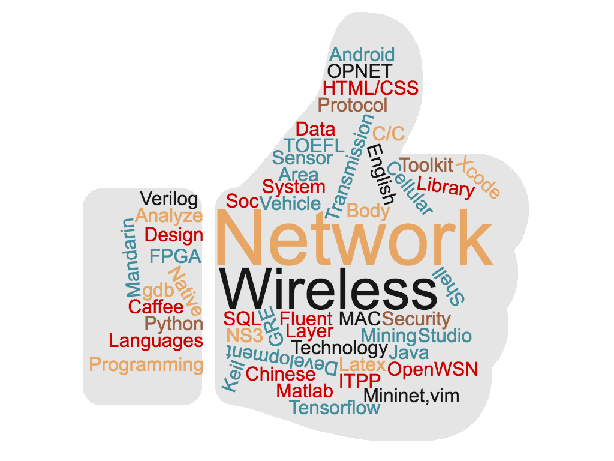
兴趣
Sports
热爱运动，篮球场打中锋/打前锋位置，也参与如排球，羽毛球等集体运动。喜欢健身，长跑（尤其是马拉松）和游泳。
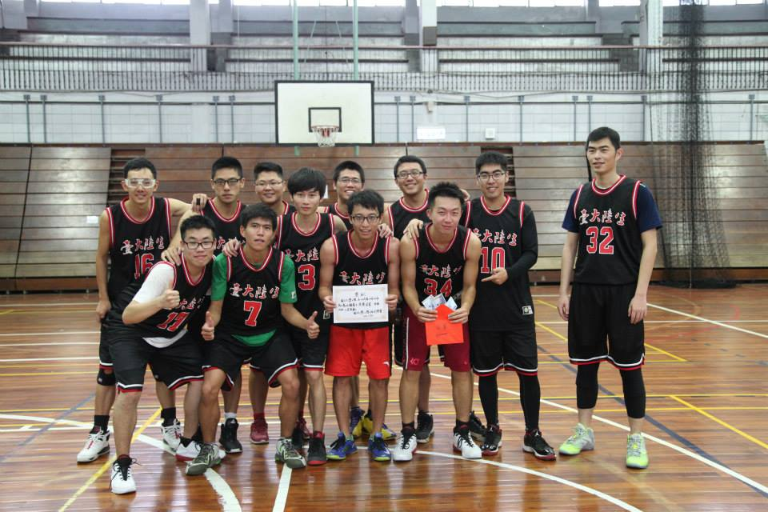
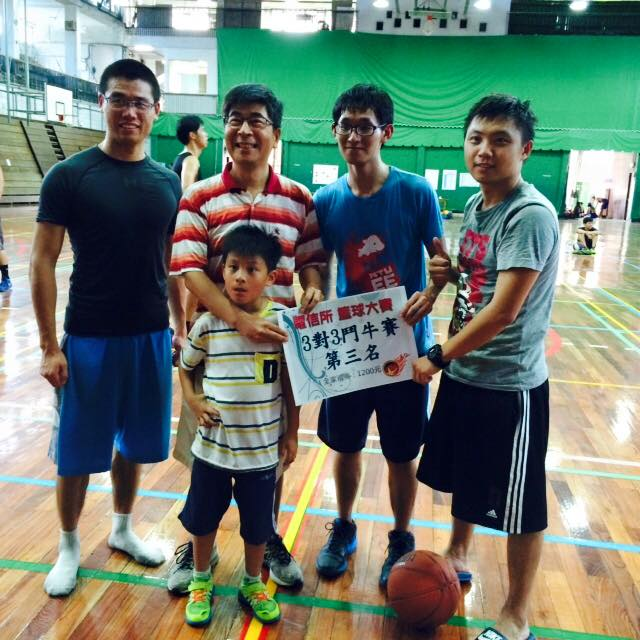
Gears Geek on Devices
我对电子产品很有兴趣，无论是最新科技还是动手维修。我有很多设备（包括笔记本电脑，手机，平板电脑）的维修经验，同时也有基础的andrioid(java)或iOS（swift）开发经验。
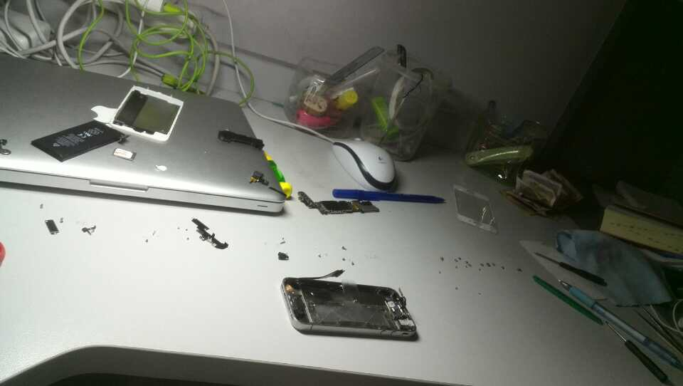
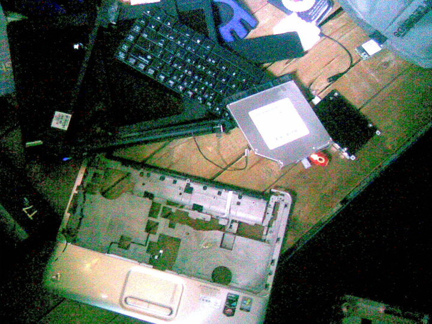
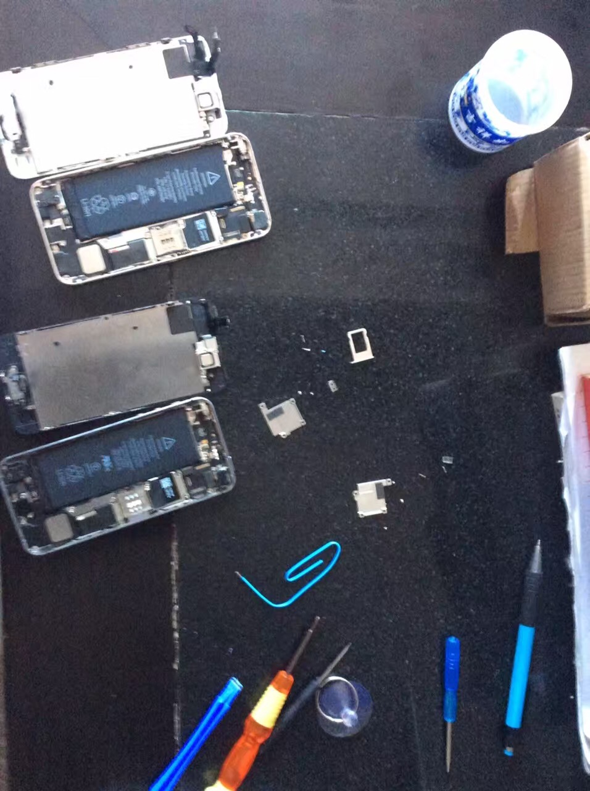
照相 热爱手机摄影
忠实Instagram Instagram 用户，对风景，小动物，旅游，食物等题材感兴趣.
旅游过中国，台湾大部分地方和新加坡，马来西亚。
:: Views ::
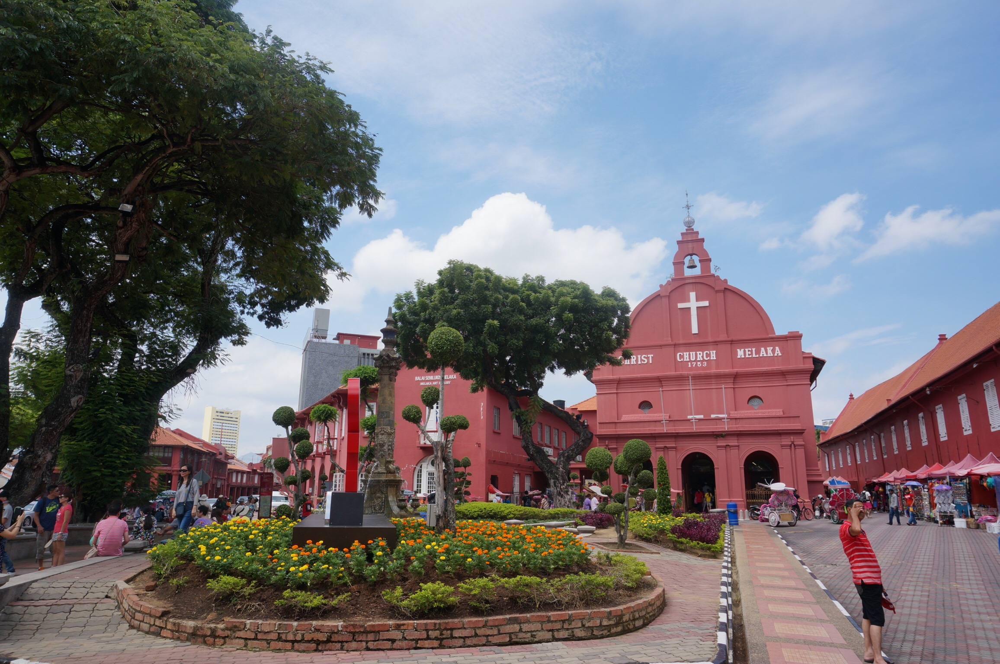
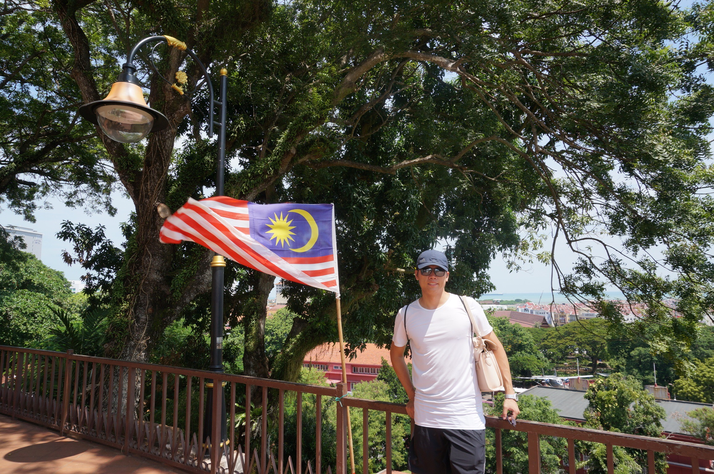
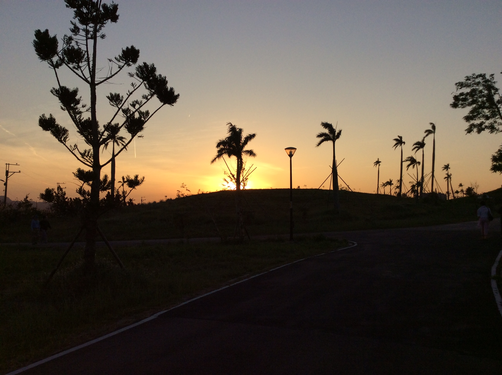
:: Foods ::
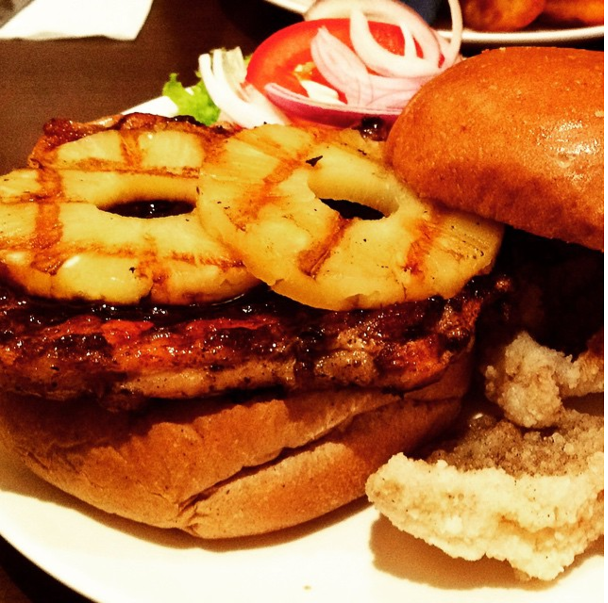
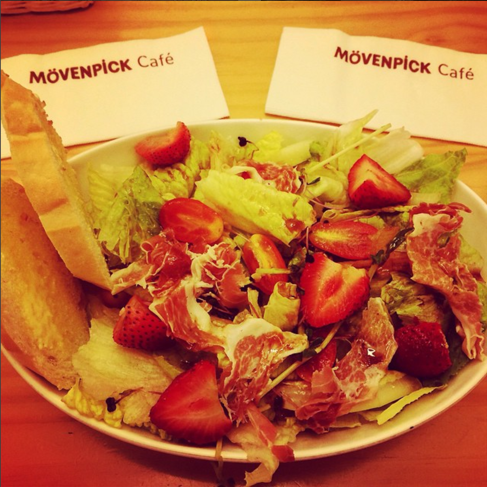